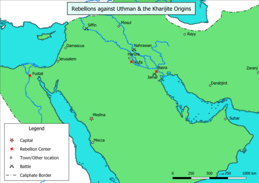
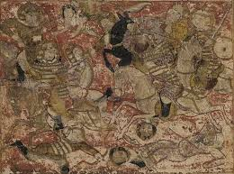
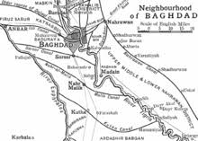
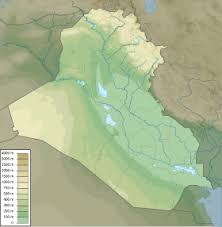

The Kharijites were the first sect to arise within Islam.They originated during the First Fitna, the struggle for political leadership over the Muslim community Ummah, following the assassination in 656 of the third caliph Uthman, may Allah be pleased with him,(r. 644–656).


Later, Imam Ali, Peace be upon him ascended the throne and became the Caliph. And thus, Mu'awiya ibn Abi Sufyan, may Allah be pleased with them both, Sayyidna Uthman's kinsman and the governor of Syria, denounced Imam Ali's election, holding that Sayyidna Uthman's murderers were in Imam Ali's camp and evaded punishment. The two faced each other at the Battle of Siffin in July 657. On the verge of defeat, Sayyedna Mu'awiya ordered his soldiers to hoist leaves of the Qur'an (masahif) on their lances, a signal to stop the fight and negotiate peace.
The qurra in Imam Ali's army were moved by the gesture, which they interpreted as an appeal to the Book of God, and demanded that Imam Ali halt the fighting immediately. Although initially unwilling, he yielded under pressure and threats of violence against him by the qurra. An arbitration committee composed of representatives of Ali and Mu'awiya was established with a mandate to settle the dispute according to the Qur'an and the sunnah. While most of Ali's army accepted the agreement, one group, which included many Tamim tribesmen, vehemently objected to the arbitration and raised the slogan 'judgment belongs to Allah alone' (La Hukma Illa li-llah).
Later on Imam Ali had sent Abu Musa Al Ash'ari, may Allah be pleased with him as a delegate to continue peace with the Khawarij, they refused to resume peace. And they had revolted against Imam Ali in the Battle of Nahrawan where the Khawarij were brutally defeated.


Ibn Muljim, may Allah's wrath be upon him, had entered Kufa with the intention of killing Imam Ali, for acquiring revenge for the Kharijites' defeat in the Battle of Nahrawan in 658. He found two accomplices in Kufa, namely, Shabib ibn Bujra and Wardan ibn al-Mujalid. Unlike Ibn Muljim, the swords of these two missed Ali and they fled, but were later caught and killed. Before his death, Imam Ali requested either a meticulous application of lex talionis to Ibn Muljim or his pardon, and he was later executed by Imam Hasan Bin Ali, Peace be upon him.